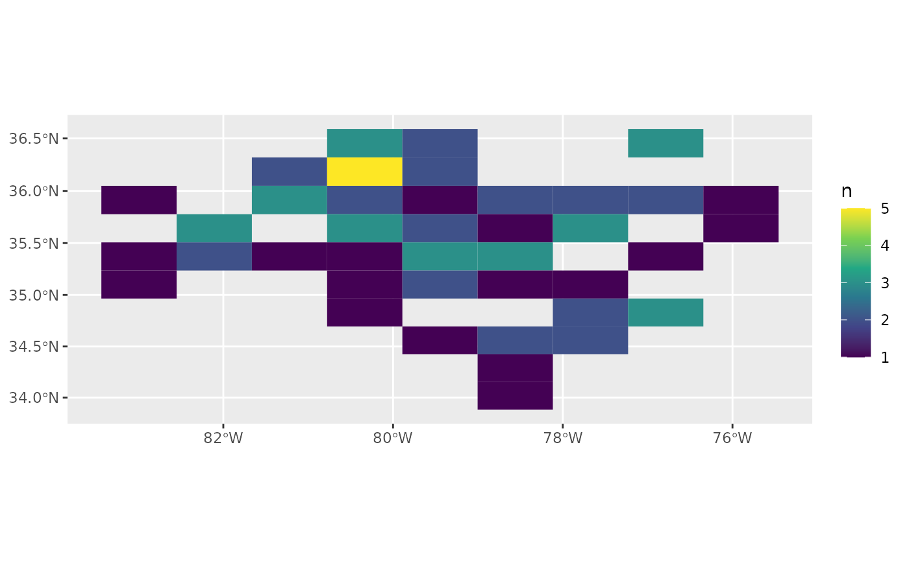
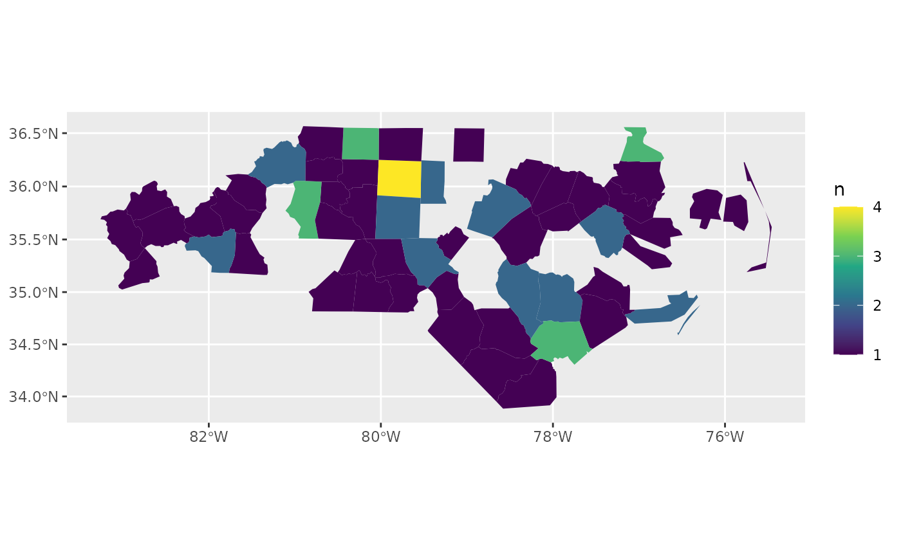

Layer for counting occurrences of data in spatial relation a location or other sf object
Source:R/layer_count.R
layer_count.RdWraps sfext::count_sf_ext(). Specification of parameters for this function
may be too complex and may be changed in the future.
Usage
layer_count(
data,
location = NULL,
y = NULL,
join = sf::st_intersects,
largest = TRUE,
replace_na = FALSE,
lims = NULL,
.id = "id",
grid_params = list(alpha = 1, color = NA),
show_data = FALSE,
data_params = list(mapping = aes(), alpha = 0.75, size = 1),
show_label = FALSE,
label_params = NULL,
scale_fn = ggplot2::scale_fill_continuous,
scale_params = list(type = "viridis", breaks = scales::breaks_pretty(n = 4)),
...
)Arguments
- data
Data to count in relationship to y
- location
Passed to x parameter of
sfext::count_sf_ext().- y
If
NULL(default), y defaults to ansfobject created byst_make_grid_ext()using x or data (if x isNULL) as the x parameter forst_make_grid_ext(). If notNULL, y must be ansfobject that has a column with the same name as .id (defaults to "id").- join
geometry predicate function with the same profile as st_intersects; see details
- largest
logical; if
TRUE, returnxfeatures augmented with the fields ofythat have the largest overlap with each of the features ofx; see https://github.com/r-spatial/sf/issues/578- replace_na
If
TRUE, replace NA values from count with 0.- lims
Optional numeric vector with minimum or both minimum and maximum count values. If provided, any values below the minimum are set to that minimum and any values above the maximum as set to the maximum. If only one value is provided, it is assumed to be a minimum limit.
- .id
A name to use for the cell id column. Defaults to "id".
- grid_params
Passed to
layer_location_data()to style foreground grid with fill based on count.- show_data
If
TRUE, add background layer with data to stack returned by function. IfTRUEand grid_params includes a fixed aesthetic for alpha, divide alpha in half to ensure background data is visible below the filled grid.- data_params
Passed to
layer_location_data()to style background layer based on data.- show_label
If
TRUE, add layer with labels to stack returned by function.- label_params
Passed to
layer_labelled()for foreground labels with fill based on count.- scale_fn, scale_params
Scale function and parameters. Defaults to
ggplot2::scale_fill_continuous().- ...
Arguments passed on to
sfext::count_sf_extwt<
data-masking> Frequency weights. Can beNULLor a variable:If
NULL(the default), counts the number of rows in each group.If a variable, computes
sum(wt)for each group.
sortIf
TRUE, will show the largest groups at the top.keep_naIf
TRUE, filter NA values from count. Ignored if replace_na isTRUE.geometryIf
TRUE(default) return asfobject. IfFALSE, return a data frame.nameThe name of the new column in the output.
If omitted, it will default to
n. If there's already a column calledn, it will usenn. If there's a column callednandnn, it'll usennn, and so on, addingns until it gets a new name.
Examples
nc <- sf::st_read(system.file("shape/nc.shp", package = "sf"))
#> Reading layer `nc' from data source
#> `/home/runner/work/_temp/Library/sf/shape/nc.shp' using driver `ESRI Shapefile'
#> Simple feature collection with 100 features and 14 fields
#> Geometry type: MULTIPOLYGON
#> Dimension: XY
#> Bounding box: xmin: -84.32385 ymin: 33.88199 xmax: -75.45698 ymax: 36.58965
#> Geodetic CRS: NAD27
data <- sf::st_sample(nc, 75)
ggplot() +
layer_count(data = data, location = nc)

ggplot() +
layer_count(data = data, y = nc, .id = "FIPS")
